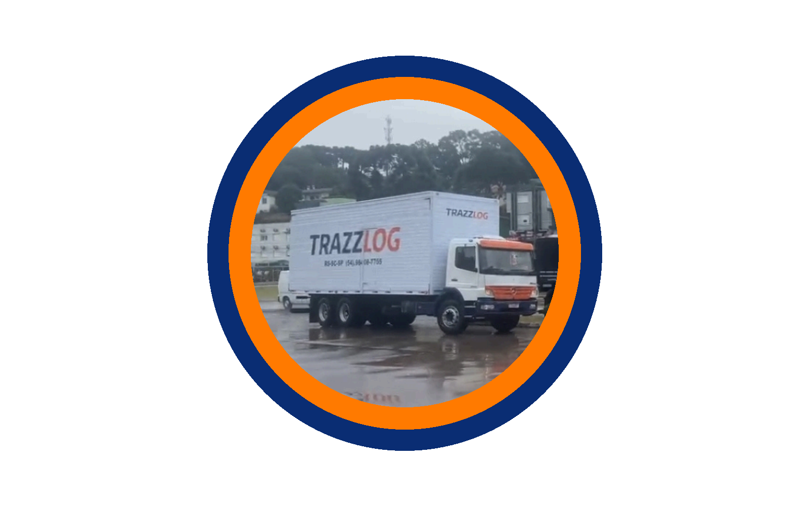

Carga fechada
Transporte dedicado para empresas que precisam de rota, prazo e acompanhamento definidos.
Transportadora no eixo Sul-Sudeste
Confiança que entrega resultados
Soluções logísticas com método, disciplina e controle para empresas que dependem de prazo, comunicação clara e previsibilidade, com cargas fechadas para todo o Brasil.
A empresa
A empresa foi construída na prática diária de coletas, entregas, prazos apertados e decisões que não podem falhar. Sua proposta vai além do frete: gestão, compromisso e inteligência operacional.
Com experiência direta no setor, a TRAZZLOG atua como parceira estratégica para clientes que precisam de execução eficiente, processos padronizados, cargas fechadas para todo o Brasil e relacionamento profissional.
Serviços
A TRAZZLOG atende operações B2B que precisam de previsibilidade, comunicação direta e responsabilidade do início ao fim.
Transporte dedicado para empresas que precisam de rota, prazo e acompanhamento definidos.
Fluxos programados entre filiais, CDs e fornecedores nos eixos RS, SC e SP.
Planejamento de janelas de coleta e entrega para reduzir urgência, ruído e retrabalho.
Comunicação objetiva para manter cliente, origem e destino alinhados durante o transporte.
Nosso posicionamento
Logística não é improviso. É método, disciplina e controle. Cada operação é tratada como parte do negócio do cliente, porque falha de transporte custa tempo, dinheiro e confiança.

Fluxo de atendimento
Origem, destino, volumes, peso, cubagem, valor da NF e tipo de produto entram no planejamento.
A operação valida janela, perfil do veículo, restrições e melhor fluxo para coleta e entrega.
O transporte segue com comunicação clara e atualização quando a operação exige decisão rápida.
A finalização prioriza confirmação, organização documental e relacionamento de longo prazo.
Executar soluções logísticas com precisão, confiabilidade e eficiência operacional, garantindo que cada entrega represente valor real para o cliente.
Ser reconhecida como uma transportadora de alto desempenho, referência em confiabilidade e gestão logística no eixo Sul-Sudeste.
Diferencial TRAZZLOG
A proposta é reduzir incerteza para o cliente: informação organizada, retorno objetivo e compromisso com aquilo que foi combinado.
Valores
Não é sair com a carga, é entregar bem, no prazo e sem ruído.
Erro em logística custa caro. Responsabilidade é prática diária.
Empresa grande não depende de sorte. Depende de padrão e controle.
Problema escondido vira prejuízo. Aqui se comunica e se resolve.
Ser rápido sem perder o comando da operação.
Cliente não é número. É parceiro de crescimento.
Presença estratégica
Atuação nos principais eixos logísticos entre Rio Grande do Sul, Santa Catarina e São Paulo, além de cargas fechadas para todo o Brasil com estrutura para crescer sem perder controle operacional.

RS - Matriz
Rua São Vicente, 794 - Bairro Cinquentenário - Farroupilha, RS - CEP 95174-274
(54) 98161-7755SP - Filial
Avenida Moita Bonita, 235 - Sala F, Jardim Brasil - Guarulhos, SP - CEP 07270-395
(11) 95407-0008 coletassp@trazzlog.com.brSC - Filial
Atendimento para a região de Itajaí e operações em Santa Catarina.
+55 54 98161-7755Perguntas frequentes
Origem, destino, quantidade de volumes, peso total, cubagem, valor da NF, tipo de produto e janela de coleta.
Sim. Há atendimento para a região de Itajaí e operações em Santa Catarina, conectando o eixo Sul-Sudeste.
Sim. O site já prioriza cargas fechadas e operações dedicadas para empresas que precisam de previsibilidade.
Use o formulário, e-mail ou WhatsApp. A página mostra contatos de RS, SP e SC na seção de unidades e no bloco de contato.
Contato
Envie os dados da carga, origem, destino e prazo. A equipe pode orientar o melhor fluxo para a operação, incluindo cargas fechadas para todo o Brasil.